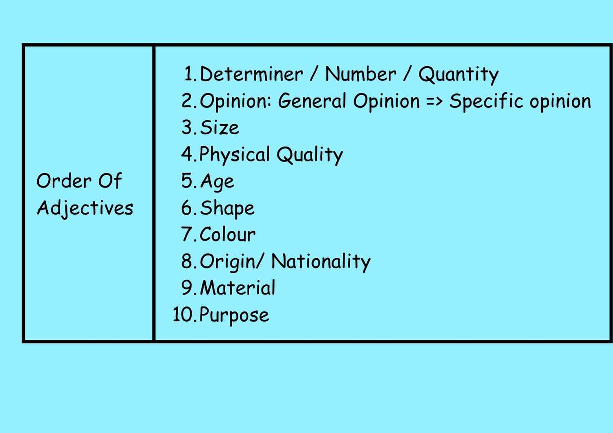

We know that adjectives are words that describe/define or modify nouns.
In a sentence, when we use two or more than two adjectives to describe a
noun we need to follow a specific order and we can never do it randomly.
This specific order is simply knowns as the
“order of adjectives”.